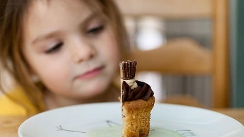
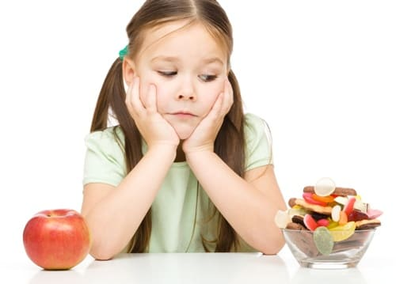

Также известное как невротическая булимия, это состояние означает навязчивое чрезмерное поедание больших количеств пищи с дальнейшим искусственным очищением от «лишней еды» с помощью вызванной рвоты, слабительных, мочегонных и клизм. Обычно оно раздается вторично по отношению к скаженному восприятию своего тела. Это заболевание чаще встречается женщин и наиболее распространено среди девушек-подростков. Боль булимией обычно кажется, что не могут контролировать свое питание, и они пытаются исправить это «очищающими» действиями. Заболевание протекает длительно, годами даже десятилетиями, и если его должным образом не лечить, то оно приведет к тяжелым и долговременным нарушениям здоровья.
ПРИЗНАКИ И СИМПТОМЫ
Безудержная еда и чистка. Безудержное поедание и последующие длительные мероприятия обычно исходят скрытно. Если вес вашей дочери оказывается намного ниже ожидаемого — возможно, она занимается очищающими процедурами.
Самовызванная рвота. Это — типичный признак булимии.
Шрамы на фалангах пальцев рук. С помощью пальцев рук часто вызывается рвота, и постоянное сование их в рот может способствовать образованию шрамов от зубов на фалангах.
Неумеренное использование мочегонных и слабительных средств. Создается впечатление, что ваш ребенок слишком надеется на эти препараты.
Полости в зубах и разрушение зубной эмали. Постоянное попадание г рот кислого желудочного содержимого при самовызванной рвоте может разрушать зубную эмаль, способствуя образованию больших полостей в зубах.
Нарушение электролитного баланса. Повторяющаяся рвота может привести к снижению количества электролитов, особенно калия, в организме. Это может вызвать тяжелые расстройства здоровья и даже смерть.
Тяжелое обезвоживание. Злоупотребление слабительными и мочегонными средствами, многократная рвота ведут к потере большого объема жидкости и обезвоживанию.
Чрезмерная заинтересованность весом. Девушка постоянно взвешивается и выражает недовольство своей «избыточной» массой тела.
Чрезмерная озабоченность личностным успехом. Девушка слишком много внимания уделяет достижению безупречности и успеха.
Симптомы депрессии или других нарушений настроения. Среди страдающих булимией наблюдается высокая частота развития депрессии.

ОТДАЛЕННЫЕ ОСЛОЖНЕНИЯ
• Тяжелые разрушения зубов из-за постоянного воздействия кислого желудочного содержимого.
• Травмы слизистой пищевода из-за многократной рвоты, ведущие к тяжелому кровотечению, исход которого может быть летальным.
• Хронический запор из-за длительного употребления слабительных и привыкания к ним.
• Обезвоживание из-за чрезмерной потери жидкости.
• Панкреатит. Из-за постоянных перееданий и чисток поджелудочной железы вырабатывает избыточное количество пищеварительных ментов, что может привести воспалению, последствия которой могут быть фатальными.
• Нарушения электролитного баланса, особенно недостаток калия, который может привести к нарушениям сердечного ритма и внезапной остановке сердца.
• Тяжелые психические нарушен в частности большая депрессия из-за чувства вины и недостаточного контроля.
• Среди страдающих булимией высок процент самоубийств.
Заметьте, что симптомы булимии и анорексии могут одновременно наблюдаться у одного того же человека. Люди, страдающие обоими этими заболеваниями, нуждаются в длительном наблюдении и лечении. Хотя причина булимии неизвестна, считается, что ее возникновение связано с некоторыми социальными проблемами и, возможно, вескими отклонениями. Часто отмечаются серьезные трудности семейных отношениях. Риск развития этого заболевания выше у перфекционистов и людей, слишком увлечённых своей внешностью.
СОВЕТ ДОКТОРОВ СИРС: В ПОМОЩИ НУЖДАЕТСЯ ВСЯ СЕМЬЯ Булимию надо рассматривать как проблему семьи, а не только ребенка. Полезно применять вышеупомянутые методики терапии ко всей семье. Помощь семье часто помогает и больному. |
ЛЕЧЕНИЕ
Больные с перечисленными выше тяжелыми осложнениями могут нуждаться в госпитализации. После устранения опасности для жизни требуется длительное многостороннее лечение. Важно проконсультироваться с диетологом и составить здоровый рацион. Очень полезны методы модификации поведения, которые должны применяться специалистом, имеющим опыт лечения больных с булимией. Возможно, потребуется консультация психиатра. Иногда в дополнение к поведенческим методикам используют антидепрессанты. Жизненно важно оценить риск суицида.

Здоровье ребенка от докторов Сирс / Сирс У. и др.